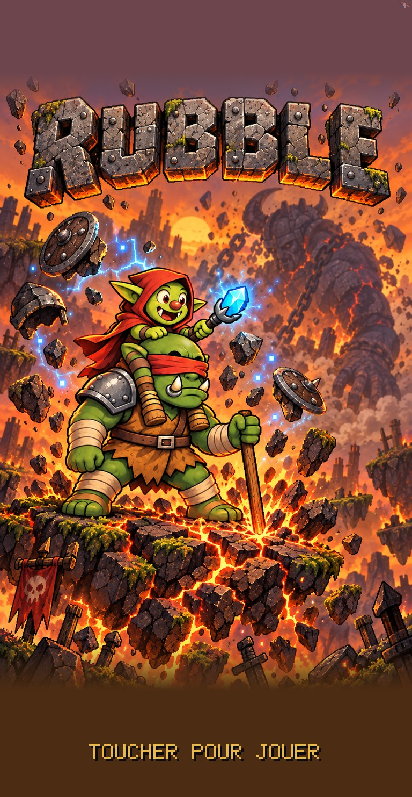
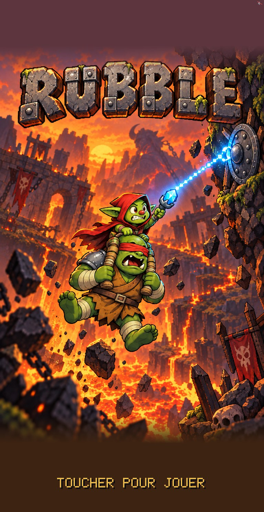
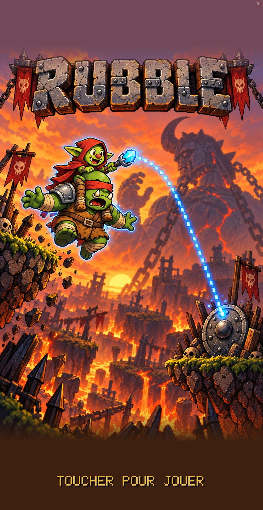
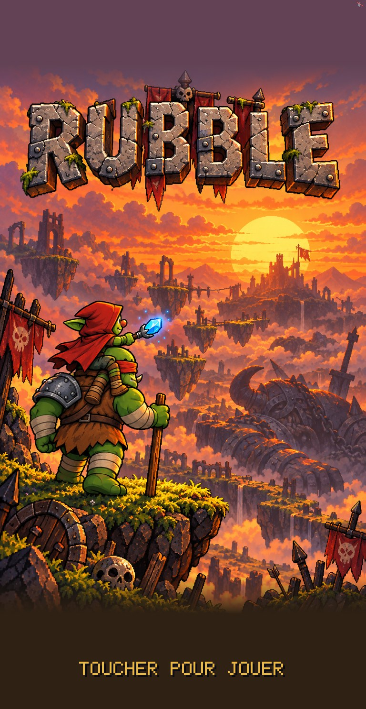
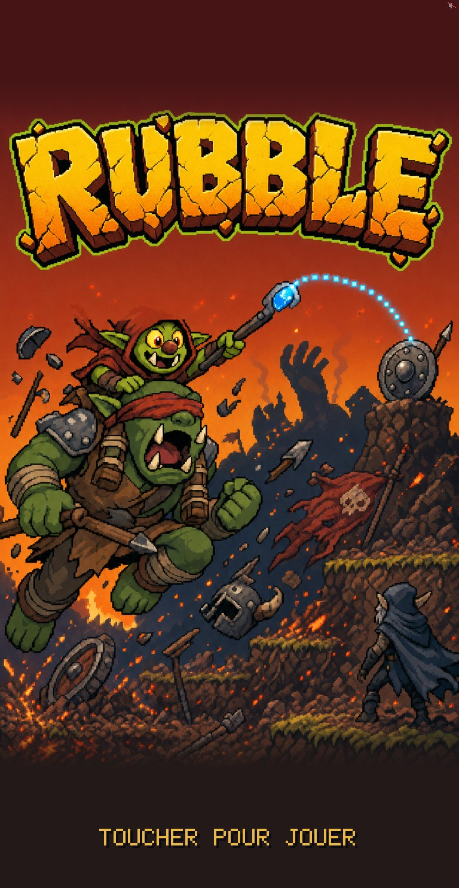

Quatre moments, avec le duo chibi du jeu (le sprite validé). Chaque image est l'écran titre tel que le jeu le dessine sur un iPhone 15 Pro dans Safari : les bandes du haut et du bas prennent la couleur des bords de l'image, « toucher pour jouer » se place dessous. Capuche et personnages entiers partout.
Ma recommandation : 2. Réponds par numéro.
Le duo en grand, campé sur un îlot qui se fend ; autour du sceptre, le métal se soulève. Le plus lisible sur téléphone, un autre moment que l'actuel, et la signature du jeu : la secousse qui devient l'aide.

Suspendus au fil, entre la lave et la paroi : le geste du jeu (tirer), le plus d'action. Le duo un peu plus petit ; Nib n'a pas sa canne (il tient les jambes de Gorm).

Le vol vers le bouclier. Beau, mais c'est le même moment que l'actuel.

Vus de dos devant le couchant, le Géant tombé dans la vallée : le plus tendre, le moins d'impact. Écart au canon : l'épaulière est sur l'épaule gauche de Nib (image en miroir du sprite).


Noté pour 1, 2 et 4 : le Géant y est encore debout, alors que dans l'histoire il est déjà tombé quand le jeu commence. Ça se retouche sur l'image choisie si tu y tiens.